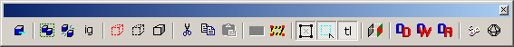
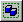
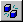
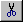

Toolbars: Map Operations

Carve
When the Carve button is pressed, the selected brush will subtract its shape from the non-selected brushes around it. See Carve, under the Tools Menu, for more information.
 Group/Ungroup
Group/Ungroup binds two or more objects together so they may be acted upon simultaneously. See Group, under the Tools Menu, for more information.
Toggle Group Ignore Shortcut: CTRL+W
Group Ignore allows you to modify individual brushes that are part of a group or entity by temporarily bypassing all object groups. All selection commands work as if there are no groups defined. The Group and Ungroup commands may or may not function while in this mode, depending on how the Allow grouping/ungrouping while Ignore Groups is checked. This option is set in the General Options dialog box. Some commands, such as Tie to Entity, will remove objects from their groups if they are used in this mode. Also see Grouping and VisGrouping for more information on Grouping.
Hide Selected
Creates a new VisGroup with the selected objects and hides it. See Hide Selected, under the View Menu, for more information.
Hide Unselected
Hides all unselected objects. Identical in function to the Hide Selected function, but applies to all unselected objects. See Hide Selected, under the View Menu, for more information.
Show All VisGroups
This command will make the all hidden objects visible, including VisGroups. This button’s function is identical to the Show Hidden Objects command, under the View Menu.
 Cut, Copy, Paste
Performs Windows clipboard operations on the selection. See Edit Menu, for more information.
 Toggle Cordon State
Toggle Cordon State
This function will toggle the visibility and effect of a cordon area you have created with the Edit Cordon Bounds tool. See Using Cordon Tools for more information.
 Edit Cordon Bounds
Edit Cordon Bounds
This function allows you to create a Cordon in order to test compile a smaller section of the map. See Using Cordon Tools for more information.
 Toggle Select-By-Handles
Toggle Select-By-Handles
When this option is toggled on, you will only be able to select objects by their center “x” handles in the 2D view. This is a shortcut – see Selection box selects by center handles only in the 2D views tab of the Options dialog box for more information.
Toggle Auto-selection
When Toggle Auto-selection is toggled on, you can select multiple objects by simply clicking your mouse button and dragging a selection box around the objects. When this option is toggled off, multiple objects are selected by dragging a selection box around the objects and then pressing ENTER. This is a shortcut to the Automatic infinite selection in 2D windows option in the 2D views tab of the Options dialog box.
 Align to World/Face
Align to World/Face
This button toggles the texture alignment style between world alignment and face alignment. World alignment will align textures according to the world grid coordinates. Face alignment will align textures according to the brush face.
 Displacement Mask
Displacement Mask
Turns off the display of the non-displacement sides for a brush that contains displacement surfaces. See Face Edit Displacements for more information.
Display Walkable
Highlights surfaces in yellow if the angle of the surface is too steep for the player to walk up it.
Displacement Edge Collapse
Turns off the display of the vertices that are collapsed when two displacements of different resolutions are connected via a Sew command.. or a brush that contains displacement surfaces. See Face Edit Displacements for more information.
Texture Lock
This button toggles texture lock mode on and off. Texture lock allows you to move or rotate a brush without disturbing the texture alignments.
 Run Map!
Run Map!
This is equivalent to choosing Run Map from the File Menu.
Show Helpers
This is equivalent to choosing Show Helpers from the View Menu .
© 2004 Valve Corporation. All rights reserved. Valve, the Valve logo, Half-Life, the Half-Life logo, the Lambda logo, Steam, the Steam logo, Team Fortress, the Team Fortress logo, Opposing Force, Day of Defeat, the Day of Defeat logo, Counter-Strike, the Counter-Strike logo, Source, the Source logo, Hammer and Counter-Strike: Condition Zero are trademarks and/or registered trademarks of Valve Corporation. Microsoft and Visual Studio are trademarks and/or registered trademarks of Microsoft Corporation. All other trademarks are property of their respective owners.